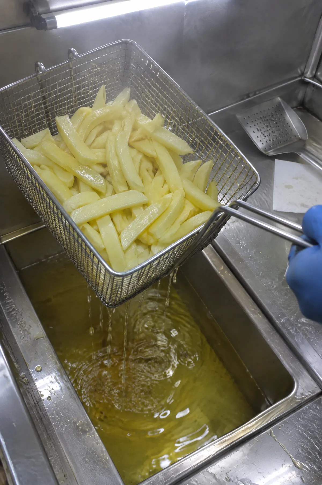
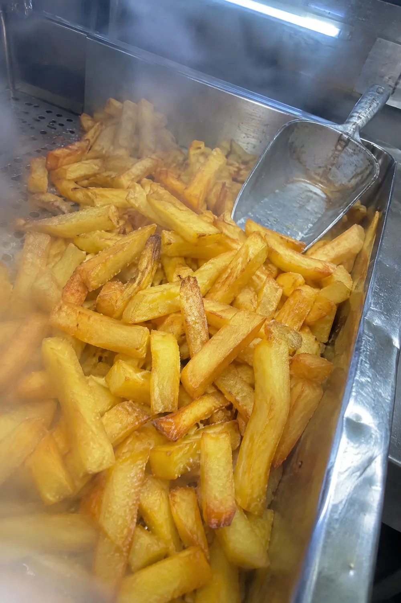
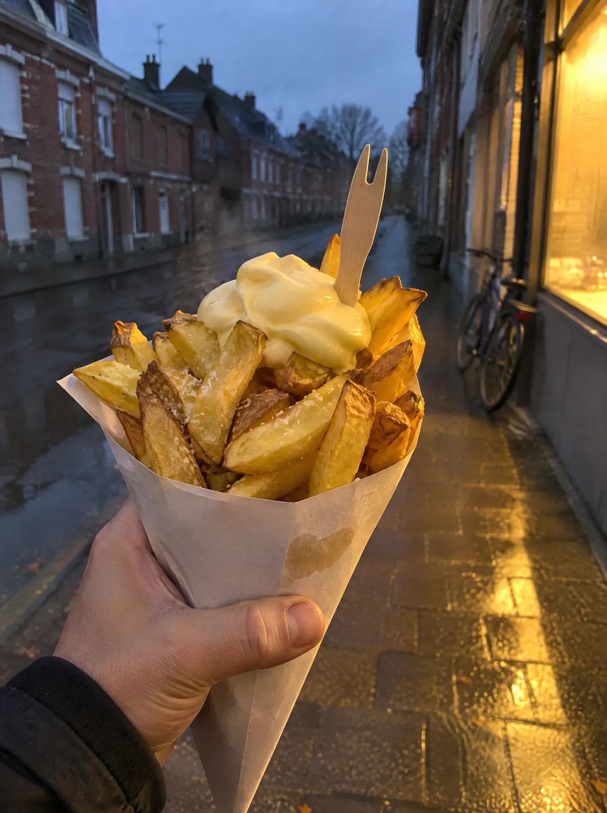

FriterieSnackingPetite restauration
Une frite pochée, c’est une frite cuite deux fois : un bain doux, puis un bain vif. À Auby, 40 A rue Léon Blum, face à la mairie.
Piquez une frite.
Pochée ?
Pochée,
puis saisie.
Pocher une frite, c’est lui donner un premier bain, doux : elle cuit à cœur et ressort toute pâle. On la relève, on la laisse souffler. Puis vient le second bain, vif : elle dore, elle croustille. Dans le Nord, on ne discute pas : une frite, c’est deux bains.
Votre tour de main, on le racontera avec vos mots.

Pochée
SaisieLes deux bains
D’abord,
on poche.
Premier bain, doux. La frite cuit à cœur, sans prendre de couleur.
On relève,
elle souffle.
Le panier s’égoutte. La frite se repose avant la suite.
Puis,
on saisit.
Second bain, vif. Ça chante, ça dore, ça croustille.
Et on
sert.
Dorée dehors, fondante dedans. Un peu de sel, et c’est à vous.
Faites défiler : c’est vous qui tenez le panier.
La carte
On mange quoi ?
Friterie, snacking et petite restauration : les trois métiers de la maison. Vos produits et vos prix sont en pointillés, on les remplit ensemble.
Un jeu, pas la carte
Et comme sauce ?
Prenez un flacon, appuyez sur la barquette et promenez-vous. Ces cinq sauces sont là pour jouer : les vôtres prendront leur place.
Barquette nature. Rien dessus, pour l’instant.
Il est .. h .. à Auby.
Les horaires
La friteuse chauffe quand ?
Vos horaires s’écriront ici, jour par jour. Le site saura dire tout seul si c’est ouvert.
Venir
Face à la mairie.
40 A rue Léon Blum
59950 Auby
Téléphone.. .. .. .. ..Votre numéro, pour commander avant de passer.

Ici, une seule page pour vous donner l’idée
Votre site peut avoir autant de pages que vous voulez.
Une page pour la carte, une pour les sauces, une pour les horaires, une pour commander : c’est vous qui voyez.